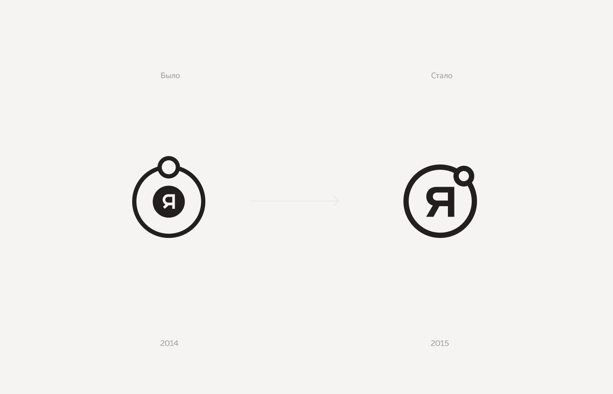
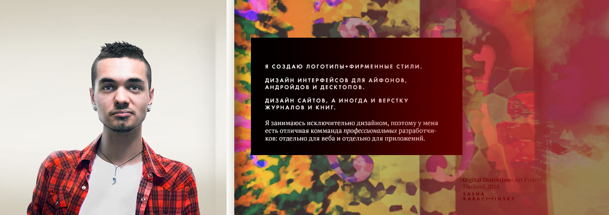
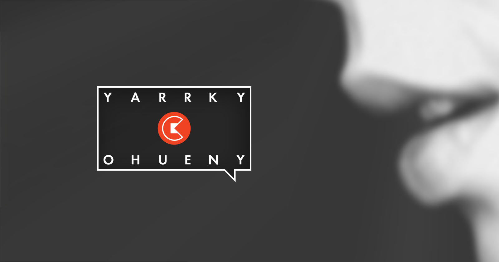

2 September 2013
Yarrco Personal Brand
For a long time, I have worked exclusively using my last name—to this day the portfolio is located at www.karachinsky.ru.
But one day everything changed.
I decided to create my own brand—memorable, light, arrogant—'bright and fucking awesome'.
In 2015, I created a new, confident and more expressive version of the logo

Following was a unique author's lettering

Sun, planet, orbit and a reference to the old idea of the geocentricity of our world. Next, we replace geocentrism with egocentrism. I—ego, everything revolves around this very I. The sun is in orbit—O letter.
In the photo —Sasha Mishina —
my good friend and muse.

«All women know that the rhythm is like the sun,
And we are like planets around it»
Aquarium «Zoom Zoom Zoom»

Business cards are included with the brand, as always
At the time of printing, the first logo was not made yet.
The QR code contains vCard —electronic business card. You scan the code and all my contacts are automatically added to your smartphone.

A bit of history
The brand developed gradually.
The light bulb was found on a desert island in Cambodia.
The attentive reader will notice that the spelling of the word bright is still old—later it was changed to Yarrco.

This is how the main banner looked in 2013

The very first slogan and logo

2011

FX Boutique. Design and branding agency.
Year 2009—the first attempts at independent business.
« We are friends and colleagues. We love everything beautiful: music, pictures, logos, cars.
[...]
Everyone on our team does what they really like: design of printed products, the development of corporate identity, logos and much more that is very interesting and completely differently related to design, because art is multifaceted and we are happy to have opportunities to find inspiration in other areas, other than graphic, in our case.
— From the studio website.

Promotional video from the same times
The very beginning